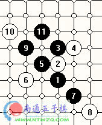

我对终结连珠的一点看法
#1 我对终结连珠的一点看法 作者：有志青年 发表时间：2006-6-4 14:14:22
老顾口述，author执笔
前一阵在月下论坛看到很多人在讨论有关连珠终结的问题，比如黑石的研究说要终结长星，五子棋软件之星也说已经终结了水月，等等。关于这些，我很早就想说一下我的看法了，但晚上上网时经常很累，往往起了个头就难再写下去。
连珠发展到了现在，尤其是90年代以后，比以前成熟了很多，加上软件的帮助，确实有许多以前的难局现在已经被搞清楚了。但是，就是在现有的规则下，要终结连珠仍然是遥远的事情，并不象大家想象的那么乐观。说终结连珠指日可待并不是严谨的态度。
现在经常在网上听到有人说，某个局面已经研究必胜了。但拿到谱一看，就会发现遗漏了强防。这样的例子举不胜举。空恨前些日子在论坛贴的云月谱就是。还有前天中华连珠网论坛里，也有人说寒星中的一个难胜变化已经有人解决了，结果也被轻易推翻。造成这些问题的，一方面是因为大家现在普遍用黑石来辅助研究变化，而由于黑石本身存在的BUG，致使很多人对某个局面作出了错误的必胜判断。李洪斌前些日子也在本论坛奉劝过大家，以为用黑石可以解决一切，是不现实的，是在误人子弟！就算用黑石，也须往下多算几步，看到230多，乃至240多，仍然不能轻信。
另一方面，棋手在研究时心态不端正也是问题的根源之一。一上来就想着要终结某某变化，往往会使自己在研究时陷于急躁的情绪之中，从而下结论过于草率，而这正是研究的大忌。如果一上来就以终结者的姿态来研究某个结论还未知的变化，结果恐怕是不会理想的，大家请看下面这个图。

这个图是在某人给出的寒星这个困扰大家多年的黑5的“必胜谱”上的截图。相信每个看到这张图的人都会激动不已，以为此谱的作者确实已经终结的所有的变化。然而遗憾的是，如李洪斌所言，在后面的分支研究中，研究者并没有秉承初始的严谨态度，遗漏了强防，从而得出了错误的研究结果。心态没有摆正，而又急于求成，造成这样虎头蛇尾的结果是难免的。
所以说，必胜并不能轻言。看过日谱的人都知道，日本人在说必胜时，都是慎之又慎的。即使是黑已经确立了较为明显的胜势，只要不能立即取胜，也只注明是“黑大优”。这和黑石的研究在《长星白必胜的研究》一贴中说的“我也不愿意把变化拆到明显必胜，我的目的只是把各个点的作战方案找出，使得白棋早晚会赢就足够了”，形成了鲜明的对比。
另外有人认为，只要开发出了强大的软件，人脑加电脑，终结连珠指日可待。试看国际象棋，变化数量最多只和目前规则下的连珠不分伯仲，但是在大公司的资金支持下，大量优秀的科学家用了世界上最先进的计算机，做出了相当完美的软件，又输入了大量的棋谱，也只不过能与世界冠军打个平手。所以要想用软件来终结连珠，谈何容易！而且只要连珠规则稍作改变，又能多出数千乃至数万倍的变化！
对于年轻棋手，我想说的是，如果以后真的想出来有一番作为，而不是只在网上看谱开软件下棋的，还是要多花一些时间来提高自己的算力，熟悉、研究流行变化，而不要在终结某变化上花太多的精力，这样对自己的水平提高并没有好处。我见过太多号称网络高手的，一到网下就一点也不会走棋了。我想这样的“网络高手”并不是大家所愿意成为的。
连珠变化无穷。有些学生的家长问我，学习连珠究竟有没有意义？这个棋种是不是过于简单？我告诉他，如果说围棋的变化是一个大的天文数的话，那么连珠的变化就是一个小的天文数。但对人脑而言，两者并没有什么区别，都是无法穷尽的。以前一度认为必胜的寒星局，经过李洪斌的深入研究，目前仍然有三分之一的变化无法必胜。寒星尚如此，更何况长星？
望各位终结者们三思！